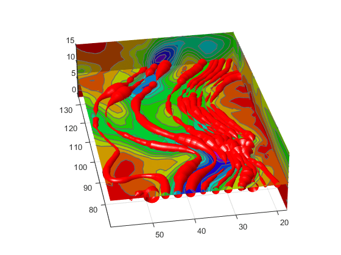

Displaying Divergence with Stream Tubes
What Stream Tubes Can Show
Stream tubes are similar to stream lines, except the tubes have width, providing another dimension that you can use to represent information.
By default, MATLAB® graphics display the divergence of the vector field by the width of the tube. You can also define widths for each tube vertex and thereby map other data to width.
This example uses the following techniques:
Stream tubes to indicate flow direction and divergence of the vector field in the
winddata setSlice planes colored to indicate the speed of the wind currents overlaid with contour line to enhance visibility
Inputs include the coordinates of the volume, vector field components, and starting locations for the stream tubes.
1. Load Data and Calculate Required Values
Load the data and calculate values needed to make the plots. These values include:
The location of the slice planes (maximum
x, minimumy, and a value for the altitude)The minimum
xvalue for the start of the stream tubesThe speed of the wind (magnitude of the vector field)
load wind xmin = min(x(:)); xmax = max(x(:)); ymin = min(y(:)); alt = 7.356; % z value for slice and streamtube plane wind_speed = sqrt(u.^2 + v.^2 + w.^2);
2. Draw the Slice Planes
Draw the slice planes (slice) and set
surface properties to create a smoothly colored slice. Use 16
colors from the hsv
colormap.
hslice = slice(x,y,z,wind_speed,xmax,ymin,alt); set(hslice,'FaceColor','interp','EdgeColor','none') colormap hsv(16)
3. Add Contour Lines to Slice Planes
Add contour lines (contourslice) to the slice planes.
Adjust the contour interval so the lines match the color boundaries in the slice
planes:
Call
climto get the current color limits.Before R2022a: Use
caxis, which has the same syntaxes and arguments asclim.Set the interpolation method used by
contourslicetolinearto match the default used byslice.color_lim = clim; cont_intervals = linspace(color_lim(1),color_lim(2),17); hcont = contourslice(x,y,z,wind_speed,xmax,ymin,... alt,cont_intervals,'linear'); set(hcont,'EdgeColor',[.4 .4 .4],'LineWidth',1)
4. Create the Stream Tubes
Use meshgrid to create arrays for the
starting points for the stream tubes, which begin at the minimum
x value, range from 20 to 50 in y, and lie
in a single plane in z (corresponding to one of the slice
planes).
The stream tubes (streamtube) are drawn at the
specified locations and scaled to be 1.25 times the default width to emphasize the
variation in divergence (width). The second element in the vector [1.25 30]
specifies the number of points along the circumference of the tube (the default is
20). You might want to increase this value as the tube size increases, to maintain a
smooth-looking tube.
Set the data aspect ratio (daspect) before calling
streamtube.
Stream tubes are surface objects, therefore you can control their appearance by setting surface properties. This example sets surface properties to give a brightly lit, red surface.
[sx,sy,sz] = meshgrid(xmin,20:3:50,alt);
daspect([1,1,1]) % set DAR before calling streamtube
htubes = streamtube(x,y,z,u,v,w,sx,sy,sz,[1.25 30]);
set(htubes,'EdgeColor','none','FaceColor','r',...
'AmbientStrength',.5)
5. Define the View
Define the view and add lighting (view, axis
volumebounds,
Projection, camlight).
view(-100,30) axis(volumebounds(x,y,z,wind_speed)) set(gca,'Projection','perspective') camlight left
